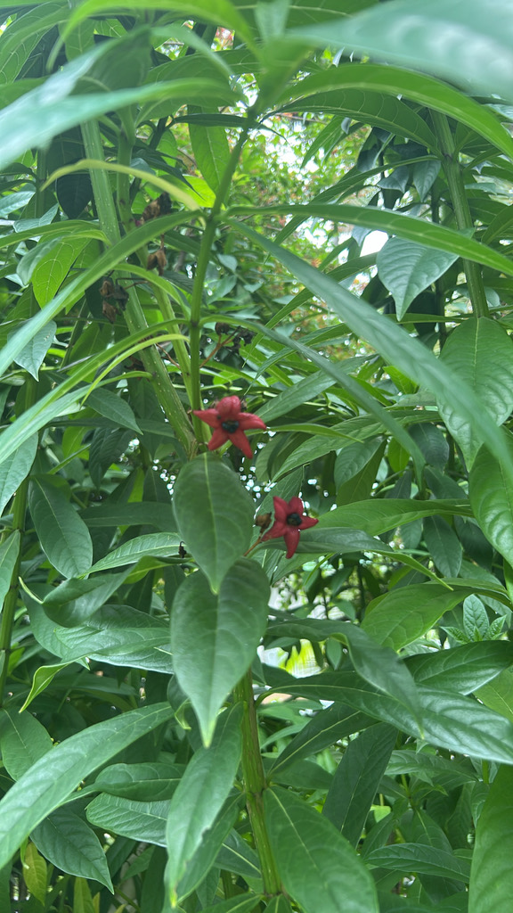

- The real attraction is not the flower but what follows it — a large, waxy, inflated calyx in deep red-purple that persists and swells as the fruit develops inside. The calyx is the show.
- The flowers themselves are a fleeting display: long white tubes with dramatically extended purple stamens, 3 to 5 inches long. They drop quickly, setting the stage for the calyx.
- Native to tropical Asia. Member of Lamiaceae — the mint family — despite looking nothing like mint.
- The hollow stems were used historically across Asia as pipe stems, pen shafts, and blowgun tubes — the origin of its common name: tube flower.
- At Palma Sola this is the worst invasive in the park — it suckers relentlessly from the roots, and we are constantly working to keep it in bounds.
Non-native. Native to tropical and subtropical Asia, from India and Nepal through Southeast Asia. Member of Lamiaceae — the mint family, recently reclassified from Verbenaceae.
- The Turk's Turban is a plant where the identifying feature is not the flower but what happens after it. The flowers are actually striking up close — long white tubes with dramatically extended purple stamens, 3 to 5 inches in length — but they are short-lived, dropping quickly to make way for the main event.
- What follows is the calyx: the leafy structure that surrounded the bud inflates after the petals fall into a large, waxy, ribbed, deep red-purple structure resembling a miniature lantern or a wrapped turban. Inside it, a small glossy black berry develops — the contrast of jet-black fruit against the red calyx is striking in its own right.
- The hollow stems have a long history of practical use across Southeast Asia — cut to length as pipe stems, pen shafts, and blowgun tubes. The common name tube flower references this directly. The plant spreads aggressively by suckering from its roots, throwing up offsets well beyond the original clump — it needs active, ongoing management.
The tubular flowers attract butterflies and hummingbirds before the showy calyx stage. The persistent red-purple calyces attract birds that investigate and sometimes eat the fruit inside.
Mild direct wildlife value, but consistent flowering over a long season makes it a useful pollinator nectar source.
Small, tubular, white to pale lavender, at stem tips. Not ornamentally showy.
The defining feature. After petals fall, the calyx inflates into a large, waxy, ribbed, deep red-purple structure enclosing the developing fruit. Persistent and conspicuous. This is what most people notice.
Small, black, enclosed inside the inflated calyx.
Whorled, 3 to 5 leaves per node, broadly oval, medium green, with toothed margins. Occasionally opposite on young growth. Stems square in cross-section — the mint family signature.
Erect perennial shrub or subshrub, 4 to 6 feet tall, with hollow lightly branched stems. Spreads aggressively by root suckers.
The large, waxy, red-purple inflated calyx structures are unusual and hard to mistake — look for them at stem tips after flowering. Square stems confirm the mint family identification.
This isn't a food plant — parts are used in traditional Asian medicine but not eaten. No serious toxicity is documented; avoid ingestion as a precaution.
No significant toxicity to dogs is documented.
The spread here is relentless and very visible. New shoots come up from the roots faster than we can remove them, and offsets have crossed walkways into beds as far as twenty yards from the parent clump. It is too frequent to eradicate, so we manage it rather than chase it — look around and you will spot plants well outside their intended bed.


- © Denise Sosa (CC-BY-NC), via iNaturalist
- © forkristin (CC-BY-NC), via iNaturalist
- © kmp1789 (CC-BY-NC), via iNaturalist
- © Randall Carter (CC-BY-NC), via iNaturalist
- © Ruby Meador (CC-BY-NC), via iNaturalist